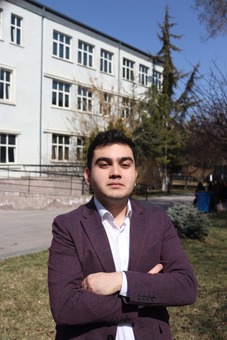
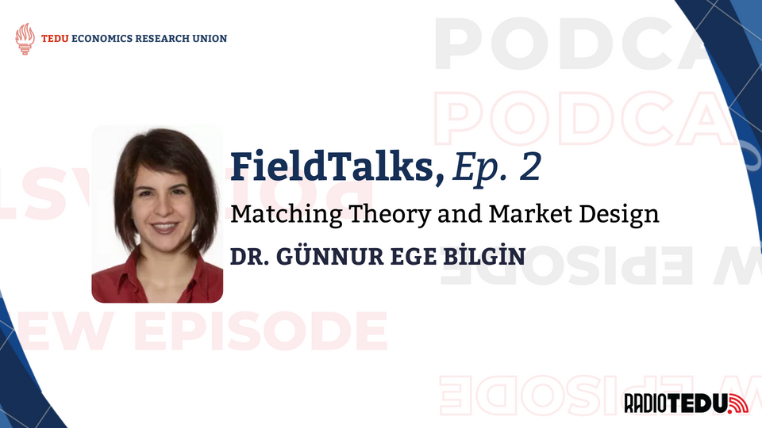
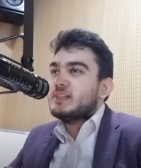
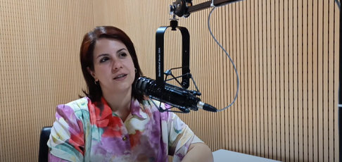

In the second episode of the FieldTalks podcast series, Dr. Günnur Ege Bilgin shed light on her fascinating academic journey and the characteristics of her field. Currently an assistant professor at TED University since September 2024, Dr. Bilgin's work focuses on how economic agents, whether individuals or institutions, are matched without the direct involvement of money.

Path to Academia
Unlike many academics who dream of the profession from a young age, Dr. Bilgin's path to academia was "winding". After getting her economics degree at Boğaziçi University, she explored the private sector; a brief hotel internship and a year-long marketing stint revealed how rigid corporate structures could stifle curiosity. Hoping to gain broader skills, she completed a master's in business while analyzing data at a consultancy firm where she enjoyed the environment for its collaborative spirit and coding challenges. Yet even there, she sensed "something missing." That, somehow, restlessness pushed her back to her academic roots: a PhD in economics, the path she now sees as her true calling.
A Latin motto on a villa, "In despair, keep a clear head; in wild joy, remain balanced," captured Bonn's lesson and still guides her outlook today.

Seven formative years at Boğaziçi University made the campus a second home, rich with close mentors and friends whose support continued when she left for a PhD in Bonn. Life in the quiet university town was a contrast to life in Istanbul, and the doctoral work had its emotional ups and downs, but it still proved deeply instructive. A Latin motto on a villa—"In despair, keep a clear head; in wild joy, remain balanced" (Aequam memento rebus in arduis servare mentem)—captured Bonn's lesson and still guides her outlook today.
Matching Theory and Market Design
Dr. Bilgin specializes in a field known as Matching Theory and Market Design, a branch of economics that blends theory with real-world application. She landed in economics almost by accident. Ruling out medicine and engineering but eager to use mathematics, she was swayed by assistant Pınar Ertör's pitch that Boğaziçi's economics program was the "only 'Turkish-Matematics' field" that lets numbers shine.
Matching Theory focuses on how economic agents—individuals or institutions—are paired without the use of money, often in contexts where monetary exchange would be unethical or impractical. Classic examples include matching students to universities or organ donors to recipients, where preferences and priorities guide the outcomes instead of prices.

Market Design, on the other hand, takes these theoretical insights and builds practical systems to achieve policy goals like fairness or efficiency. Here, the economist acts like an engineer, crafting mechanisms to steer decisions toward socially desirable results. This field is rooted in discrete economics and leans heavily on mathematics and algorithmic thinking, with foundations built in the 1960s and 70s, making it both analytically impressive and socially impactful.
